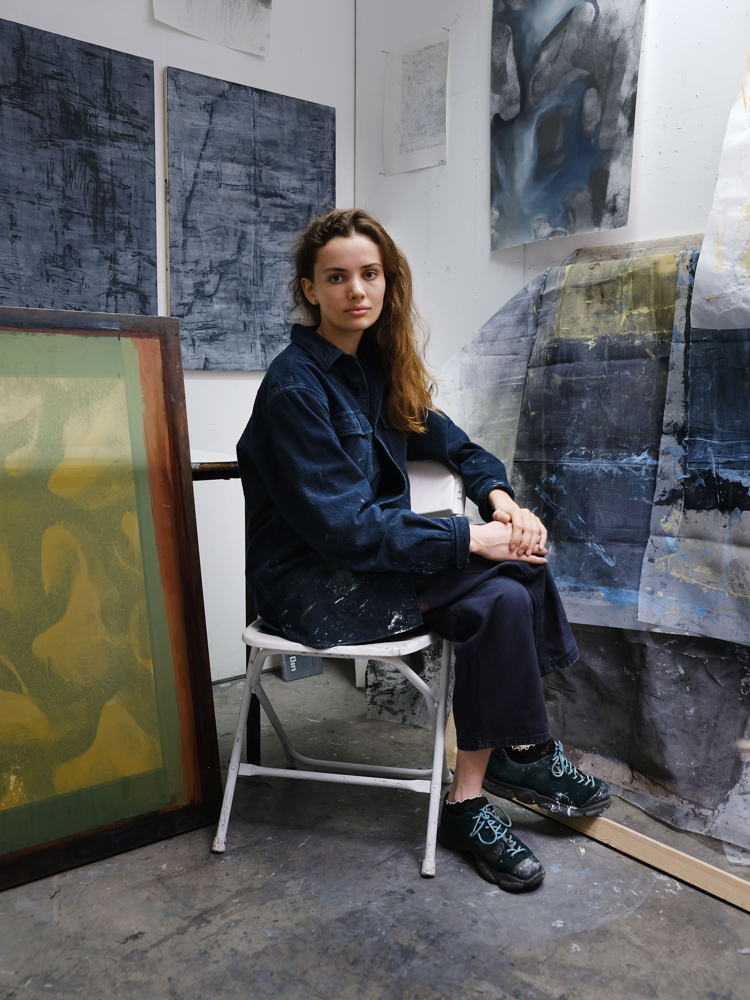

Caroline Coolidge is driven by investigations of the ephemeral. The screen is the foundation of her practice, both as a material and a metaphor. In her paintings, prints, and installations, she centers on breaking down language, image, and the printing process. Coolidge’s works are remnants of unexpected applications of process and tools, as she questions what it means to see when vision is mediated, realities are no longer certain, and resolution is lost.
Based in Edinburgh, Scotland, Coolidge has exhibited her work internationally in both solo and group presentations. Venues include Edinburgh’s Patriothall Gallery, the Dolphin Gallery at St John's College at the University of Oxford, Spoke Gallery in Boston, and the Carpenter Center for the Visual Arts at Harvard University. Coolidge has held residencies at Estudio Corazón at Ghost Ranch, the Vermont Studio Center, and the Salzburg International Summer Academy of Fine Arts. She worked as a 2023 teaching fellow in the Art, Film, and Visual Studies department at Harvard University and was awarded a 2020 Curatorial Research Fellow at the MIT List Visual Arts Center. She completed her undergraduate studies at Harvard University in 2022 and earned a master's degree with distinction from the Ruskin School of Art at the University of Oxford in 2024.
Coolidge can be contacted via email at studio@carolinecoolidge.com.